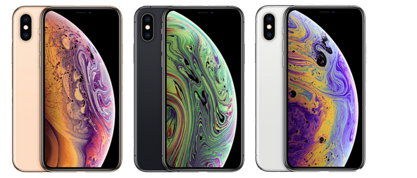

| 発売日 |
機種名 |
特徴 |
画像 |
| 2007/6/29 |
iPhone（初代） |
日本では未発売の初代iPhone |
|
| 2009/6/26 |
iPhone3Gs |
オートフォーカス、動画撮影が可能 |
|
| 2010/6/24 |
iPhone4 |
初めてインカメラが搭載 |
|
| 20011/10/24 |
iPhone4s |
スティーブ・ジョブズ氏が携わった最後のiPhone |
|
| 2012/9/21 |
iPhone5 |
Lightningケーブルが初めて採用 |
|
| 2008/7/11 |
iPhone5c |
低価格でカラーバリエーションが豊富 |
|
| 2013/9/ |
iPhone5s |
ドコモも加わり、大手3キャリア全てで取り扱いが開始 |
|
| 2014/9/19 |
iPhone6,iPhone6 Plus |
本体のディスプレイサイズが4.7インチ、5.5インチと大型化 |
 |
| 2015/9/25 |
iPhone6s,iPhone6s Plus |
3D Touch機能が初めて搭載 |
 |
| 2016/3/24 |
iPhoneSE |
大型化していたiPhoneが小型化 |
|
| 2016/9/25 |
iPhone7,iPhone7 Plus |
イヤホンジャックが廃止され,ポートレートモードが初めて搭載 |
|
| 2018/9/22 |
iPhone8,iPhone8 Plus |
背面がガラスになり、ワイヤレス充電にも対応 |
|
| 2017/11/3 |
iPhoneX |
iPhone発売から10周年、初の全面ディスプレイモデル顔認証も話題に |
|
| 2018/9/21 |
iPhoneXS,iPhoneXS MAX |
ゴールドが加わり、全面ディスプレイモデルが大型化 |
 |
| 2018/10/26 |
iPhoneXR |
カラーバリエーションが豊富な全面ディスプレイモデル |
|
| 2019/9/20 |
iPhone11,iPhone11 Pro,iPhone11 Pro Max |
カメラレンズの見た目が当時流行っていたタピオカに似ていることから「タピオカレンズ」と呼ばれる |
|
| 2020/4/24 |
iPhoneSE(第二世代) |
8では搭載していなかったデュアルSIMに対応 |
|
| 2020/10/23 |
iPhone12,iPhone12 mini |
5Gに初対応、カメラのF値が1.6になり、より明るく写真を撮影可能 |
|
| 2020/10/23 |
iPhone12 Pro,iPhone12 Pro Max |
初めてLiDARスキャナが搭載し、カメラ性能が向上 |
|
| 2021/9/24 |
iPhonese13,iPhone13min,etc... |
シネマティックモードが搭載し、カンタンに奥ゆきのある映像が撮影可能に |
|
| 2022/3/18 |
iPhoneSE(第三世代) |
指紋認証が搭載したiPhoneでは、初となる5G対応 |
|
| 2022/9/16 |
iPhone14,iPhone14 Pro |
衛星通信機能で緊急時でもSOS通信が可能、Proシリーズはダイナミックアイランドが搭載 |
|
| 2023/9/22 |
iPhone15,iPhone15 Pro |
LightningコネクタからUSB-Cに変更 |
|